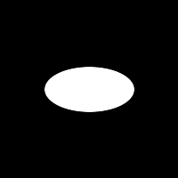

Copyright © Fred Weinhaus My scripts are available free of charge for non-commercial (non-profit) use, ONLY. For use of my scripts in commercial (for-profit) environments or non-free applications, please contact me (Fred Weinhaus) for licensing arrangements. My email address is fmw at alink dot net. If you: 1) redistribute, 2) incorporate any of these scripts into other free applications or 3) reprogram them in another scripting language, then you must contact me for permission, especially if the result might be used in a commercial or for-profit environment. Usage, whether stated or not in the script, is restricted to the above licensing arrangements. It is also subject, in a subordinate manner, to the ImageMagick license, which can be found at: http://www.imagemagick.org/script/license.php Please read the Pointers For Use on my home page to properly install and customize my scripts. |
|
Compute shift, scale and rotation invariant image moments as well as elliptical shape descriptors |
last modified: December 15, 2018
|
USAGE: moments [-z] infile -z ... Replaces NAN or DBZ with 0; default shows NAN and/or DBZ PURPOSE: To compute shift, scale and rotation invariant image moments as well as elliptical shape descriptors. DESCRIPTION: ENTROPY computes Hu and Maitra shift, scale and rotation invariant image moments as well as elliptical shape descriptors. Currently this script is limited to grayscale images. If the input is not grayscale, it will be converted to grayscale. The list of moments and shape descriptors is sent to the terminal. ARGUMENTS: -z ... replace (not a number) NAN (from square root of negative value) or (divide by zero) DBZ with 0 in Maitra moments. The default is to show NAN and/or DBZ.
REFERENCES: CAVEAT: No guarantee that this script will work on all platforms, nor that trapping of inconsistent parameters is complete and foolproof. Use At Your Own Risk. |
|
Image And List of Moments | ||
|
Original Image |
Image Creation Parameters |
Moment List and |

|
|
X Center of Mass (XCOM) = 69.13896179 |
|
 |
White Ellipse: |
X Center of Mass (XCOM) = 100.0000687 |

|
White Rectangle: |
X Center of Mass (XCOM) = 137.5 |
|
What the script does is as follows:
|